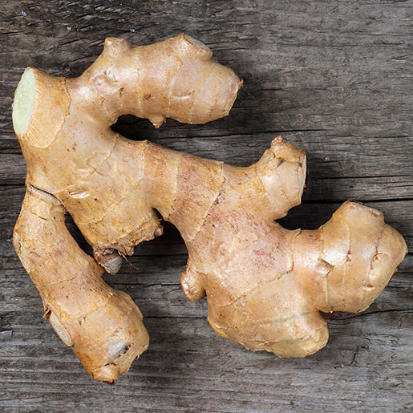

Herbs that are commonly used for medical purposes

- Eating ginger can cut down on fermentation, constipation and other causes of bloating and intestinal gas.
- Ginger contains antioxidants. These molecules help manage free radicals, which are compounds that can damage cells when their numbers grow too high.
- For generations, women have praised the power of ginger to ease “morning sickness” and other queasiness associated with pregnancy. Even the American Academy of Obstetrics and Gynecology mentions ginger as an acceptable nonpharmaceutical remedy for nausea and vomiting.
- Encouraging stomach emptying can relieve the discomforts of nausea
Know more about this herb
- Abdominal obesity : This means having a waist circumference of more than 35 inches for women and more than 40 inches for men. An increased waist circumference is the form of obesity most strongly tied to metabolic syndrome..
- High blood pressure of 130/80 mm Hg (millimeters of mercury) or higher. Normal blood pressure is defined as less than 120 mm Hg for systolic pressure (the top number), and less than 80 mm Hg for diastolic pressure (the bottom number). High blood pressure is strongly tied to obesity. It is often found in people with insulin resistance.
- Impaired fasting blood glucose. This means a level equal to or greater than 100 mg/dL
Know more about this herb
- Lavender helps with people whom suffer from insomnia
- Lavender can help reduce a persons anxiety
- Topical use of lavender oil might help to treat a disease called alopecia aerata, which causes a person’s hair to fall out in patches
Know more about this herb
- Echinacea plants are loaded with plant compounds that function as antioxidants.
Antioxidants are molecules that help defend your cells against oxidative stress, a state that has been linked to chronic diseases, such as diabetes, heart disease, and many others
- Echinacea is best known for its beneficial effects on the immune system.
Numerous older studies have found that this plant may help your immune system combat infections and viruses, which could help you recover faster from illness
- High blood sugar can raise your risk of serious health problems, including type 2 diabetes, heart disease, and several other chronic conditions.
Test-tube studies have found that echinacea plants may help lower blood sugar levels.
Know more about this herb
- Help With Headaches
The active ingredient in peppermint is menthol. Some small studies show it can lessen the pain of migraine headaches. It may also reduce other symptoms like light sensitivity, nausea, and vomiting. A few studies suggest that applying a peppermint oil solution to your forehead and temples can help take away tension headaches, too.
Antioxidants are molecules that help defend your cells against oxidative stress, a state that has been linked to chronic diseases, such as diabetes, heart disease, and many others
- Kill Mouth Germs
Not only does the flavor of peppermint freshen your breath, but its antibacterial properties may also help get rid of the source of the smell: germs. It’s believed to keep bacteria from forming a film on your teeth, which helps keep your pearly whites healthy.
- Ease Stuffy Sinuses
Peppermint’s antimicrobial powers may help you fight off the common cold or the infected mucus that sets up shop in your sinuses as a result. The menthol can also make you feel that you can breathe more easily.
Know more about this herb
There are countless other herbs which have benefits on heath
If you want to know more about plants which are medically beneficial for everyone then you can visit the site below for more information
Visit here